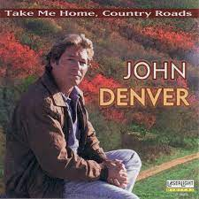

Take Me Home, Country Roads

By: John Denver
Music Video
Almost heaven, West Virginia
Blue Ridge Mountains, Shenandoah River
Life is old there, older than the trees
Younger than the mountains, growin' like a breeze
Country roads, take me home
To the place I belong
West Virginia, mountain mama
Take me home, country roads
All my memories gather 'round her
Miner's lady, stranger to blue water
Dark and dusty, painted on the sky
Misty taste of moonshine, teardrop in my eye
Country roads, take me home
To the place I belong
West Virginia, mountain mama
Take me home, country roads
I hear her voice in the mornin' hour, she calls me
The radio reminds me of my home far away
Drivin' down the road, I get a feelin'
That I should've been home yesterday, yesterday
Country roads, take me home
To the place I belong
West Virginia, mountain mama
Take me home, country roads
Country roads, take me home
To the place I belong
West Virginia, mountain mama
Take me home, country roads
Take me home, (down) country roads
Take me home, (down) country roads